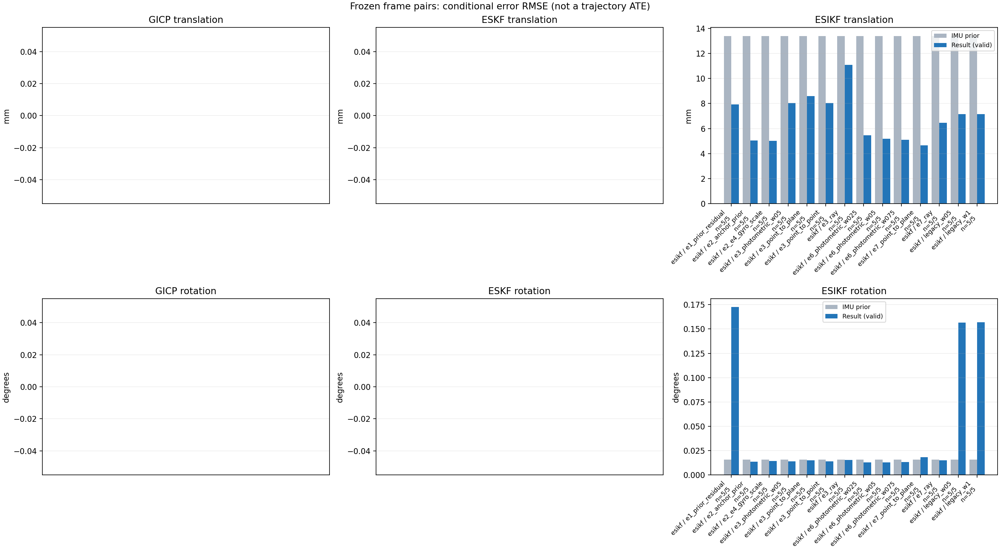

20261015_112757_right · depth=disparity_cache · cache=29a6c7a53b06b778b4bb
模型视差：/home/ubuntu22/slam/SIO_SLAM/models/tensorrt/disp_896x448_fp16.plan；engine SHA256=604cf6ac1f705c877260711730dd5d2d58c2a21f3020c03c668401ef7fb1e768。输入为生产裁剪与光照处理后的 RGB 0..255；此实验使用原始浮点像素视差，不应用完整前端的邻域视差后处理。
原始 ONNX SHA256：e9f49736a65d68d06681add463866b6defdf78fdd7f4f50f6cc941b682fdc0bc。
代价体图改写验证：ONNX Runtime 固定随机特征输入，最大绝对误差 0；该项检查图改写，完整模型精度仍需由录制数据评估。
配准代码版本：744ac2d993ae629b0cc44a3b1d995e04ab4fad48；观测生成版本：744ac2d993ae629b0cc44a3b1d995e04ab4fad48。
固定图像对与纯 IMU 先验；ESKF 回放固定 GICP 观测，ESIKF 直接读取点云。真值只用于此报告。
同时查看 converged 与 solver_status：上游默认 Stereo 在 max_iter / stopped_at_minimum 时也可能置 converged=true。valid 表示输入检查通过，不表示精度提升。欧氏 GICP 未提供独立的点距 RMSE，该列显示 NaN。
误差按每对图像的锚点计算，单位 m / degrees。此处 RMSE 不是全序列 ATE；末帧受同一锚点条件约束。NIS 与条件马氏距离是诊断量，少量相关图像对不能用于宣称协方差已校准。
全部指标 CSV · R / P / K 矩阵 CSV · Stereo 求解逐轮 CSV · ESIKF 逐轮 CSV · 配置快照 · 矢量图
unflagged 排除纯惯性先验平移误差超过 50 mm 的图像对；whitened 为误差按协方差白化后的每自由度均值，协方差与实际误差相符时约为 1。
| stage | method | variant | valid | total | result_translation_rmse_m | result_rotation_rmse_deg | result_translation_median_m | result_rotation_median_deg | result_translation_rmse_unflagged_m | result_rotation_rmse_unflagged_deg | improved_translation | improved_rotation | posterior_whitened_by_P_rot_mean | posterior_whitened_by_P_trans_mean |
|---|---|---|---|---|---|---|---|---|---|---|---|---|---|---|
| esikf | esikf | e1_prior_residual | 5 | 5 | 0.0079266 | 0.17254 | 0.006814 | 0.16208 | 0.0079266 | 0.17254 | 2 | 0 | 104.57 | 72.461 |
| esikf | esikf | e2_anchor_prior | 5 | 5 | 0.005053 | 0.0137 | 0.0017593 | 0.0090167 | 0.005053 | 0.0137 | 3 | 3 | 37.255 | 114.8 |
| esikf | esikf | e2_e4_gyro_scale | 5 | 5 | 0.0050217 | 0.014168 | 0.0017594 | 0.010271 | 0.0050217 | 0.014168 | 3 | 2 | 31.138 | 112.53 |
| esikf | esikf | e3_photometric_w05 | 5 | 5 | 0.0080483 | 0.014128 | 0.003891 | 0.0083683 | 0.0080483 | 0.014128 | 5 | 3 | 28.774 | 6.6678 |
| esikf | esikf | e3_point_to_plane | 5 | 5 | 0.0085835 | 0.014888 | 0.0039897 | 0.0091976 | 0.0085835 | 0.014888 | 4 | 4 | 28.672 | 3.2145 |
| esikf | esikf | e3_point_to_point | 5 | 5 | 0.0080379 | 0.014127 | 0.0038914 | 0.0083681 | 0.0080379 | 0.014127 | 5 | 3 | 28.774 | 6.6624 |
| esikf | esikf | e3_ray | 5 | 5 | 0.011072 | 0.015298 | 0.0040686 | 0.0098214 | 0.011072 | 0.015298 | 3 | 1 | 28.151 | 3.2295 |
| esikf | esikf | e6_photometric_w025 | 5 | 5 | 0.0054659 | 0.012821 | 0.0026596 | 0.0083292 | 0.0054659 | 0.012821 | 4 | 3 | 30.331 | 36.181 |
| esikf | esikf | e6_photometric_w05 | 5 | 5 | 0.0051884 | 0.012714 | 0.0019512 | 0.0094047 | 0.0051884 | 0.012714 | 4 | 3 | 29.992 | 62.662 |
| esikf | esikf | e6_photometric_w075 | 5 | 5 | 0.0051034 | 0.01322 | 0.0018108 | 0.0098244 | 0.0051034 | 0.01322 | 4 | 2 | 30.276 | 88.637 |
| esikf | esikf | e7_point_to_plane | 5 | 5 | 0.0046641 | 0.018274 | 0.0026762 | 0.018955 | 0.0046641 | 0.018274 | 4 | 3 | 32.409 | 9.99 |
| esikf | esikf | e7_ray | 5 | 5 | 0.0064587 | 0.014921 | 0.0032893 | 0.010037 | 0.0064587 | 0.014921 | 2 | 1 | 33.042 | 12.838 |
| esikf | esikf | legacy_w05 | 5 | 5 | 0.0071505 | 0.15662 | 0.0058117 | 0.11561 | 0.0071505 | 0.15662 | 2 | 0 | 46.648 | 29.896 |
| esikf | esikf | legacy_w1 | 5 | 5 | 0.0071567 | 0.15693 | 0.0058125 | 0.11777 | 0.0071567 | 0.15693 | 2 | 0 | 93.216 | 59.546 |

| stage | case | method | variant | status | solver_status | inliers | converged | covariance_convention | covariance_from_hessian | fitness | registration_rmse_m | prior_trans_error_m | result_trans_error_m | prior_rot_error_deg | result_rot_error_deg | prior_flagged | R_rot_trace_rad2 | R_pos_trace_m2 | nis_regularized | posterior_whitened_by_P_rot | posterior_whitened_by_P_trans |
|---|---|---|---|---|---|---|---|---|---|---|---|---|---|---|---|---|---|---|---|---|---|
| esikf | static_start | esikf | legacy_w1 | updated | converged | 15562 | 1 | 1 | 0 | 0 | 8.5313e-05 | 0.0013594 | 0.00090396 | 0.041398 | 0 | 1.364e-07 | 9.4523e-07 | nan | 4.0424 | 2.3737 | |
| esikf | static_start | esikf | legacy_w05 | updated | converged | 15563 | 1 | 1 | 0 | 0 | 8.5313e-05 | 0.0014023 | 0.00090396 | 0.04031 | 0 | 2.7251e-07 | 1.8875e-06 | nan | 1.9757 | 1.4321 | |
| esikf | static_start | esikf | e1_prior_residual | updated | converged | 15533 | 1 | 1 | 0 | 0 | 8.5313e-05 | 0.0020873 | 0.00090396 | 0.052767 | 0 | 1.374e-07 | 9.5782e-07 | nan | 5.9638 | 5.7676 | |
| esikf | static_start | esikf | e2_anchor_prior | updated | converged | 15559 | 1 | 1 | 0 | 0 | 8.5313e-05 | 0.00037582 | 0.00090396 | 0.00096629 | 0 | 1.3694e-07 | 9.5327e-07 | nan | 0.34391 | 0.94543 | |
| esikf | static_start | esikf | e2_e4_gyro_scale | updated | converged | 15559 | 1 | 1 | 0 | 0 | 8.5313e-05 | 0.00037582 | 0.00090396 | 0.00096631 | 0 | 1.3694e-07 | 9.5327e-07 | nan | 0.34387 | 0.94543 | |
| esikf | static_start | esikf | e6_photometric_w075 | updated | converged | 15559 | 1 | 1 | 0 | 0 | 8.5313e-05 | 0.00031423 | 0.00090396 | 0.00093664 | 0 | 1.8257e-07 | 1.2709e-06 | nan | 0.32338 | 0.58744 | |
| esikf | static_start | esikf | e6_photometric_w05 | updated | converged | 15559 | 1 | 1 | 0 | 0 | 8.5313e-05 | 0.00023559 | 0.00090396 | 0.0009174 | 0 | 2.7377e-07 | 1.9056e-06 | nan | 0.30979 | 0.28696 | |
| esikf | static_start | esikf | e6_photometric_w025 | updated | converged | 15559 | 1 | 1 | 0 | 0 | 8.5313e-05 | 0.00013736 | 0.00090396 | 0.00090719 | 0 | 5.4705e-07 | 3.8074e-06 | nan | 0.30069 | 0.081664 | |
| esikf | static_start | esikf | e7_ray | updated | converged | 15558 | 1 | 1 | 0 | 0 | 8.5313e-05 | 0.0005192 | 0.00090396 | 0.00091566 | 0 | 0.013072 | 1.487e-05 | nan | 0.29861 | 1.2276 | |
| esikf | static_start | esikf | e7_point_to_plane | updated | converged | 15559 | 1 | 1 | 0 | 0 | 8.5313e-05 | 0.0002879 | 0.00090396 | 0.00090366 | 0 | 8.5111e-07 | 3.6556e-06 | nan | 0.29368 | 0.36733 | |
| esikf | static_start | esikf | e3_point_to_point | updated | converged | 15559 | 1 | 1 | 0 | 0 | 8.5313e-05 | 8.0159e-05 | 0.00090396 | 0.00090374 | 0 | 7.4978e-06 | 5.6392e-05 | nan | 0.29329 | 0.024534 | |
| esikf | static_start | esikf | e3_photometric_w05 | updated | converged | 15559 | 1 | 1 | 0 | 0 | 8.5313e-05 | 8.0165e-05 | 0.00090396 | 0.00090374 | 0 | 7.4932e-06 | 5.6481e-05 | nan | 0.29329 | 0.024537 | |
| esikf | static_start | esikf | e3_ray | updated | converged | 15559 | 1 | 1 | 0 | 0 | 8.5313e-05 | 8.9053e-05 | 0.00090396 | 0.00090411 | 0 | 1.1426 | 0.0012799 | nan | 0.29289 | 0.029981 | |
| esikf | static_start | esikf | e3_point_to_plane | updated | converged | 15559 | 1 | 1 | 0 | 0 | 8.5313e-05 | 8.5516e-05 | 0.00090396 | 0.00090369 | 0 | 4.1957e-05 | 0.00011001 | nan | 0.29281 | 0.027761 | |
| esikf | sync_motion | esikf | legacy_w1 | updated | converged | 16462 | 1 | 1 | 0 | 0 | 0.00089766 | 0.0061787 | 0.0098191 | 0.11777 | 0 | 1.2905e-07 | 9.0174e-07 | nan | 21.515 | 45.273 | |
| esikf | sync_motion | esikf | legacy_w05 | updated | converged | 16458 | 1 | 1 | 0 | 0 | 0.00089766 | 0.0061646 | 0.0098191 | 0.11561 | 0 | 2.5777e-07 | 1.7991e-06 | nan | 10.888 | 22.906 | |
| esikf | sync_motion | esikf | e1_prior_residual | updated_not_converged | max_iterations | 16473 | 0 | 1 | 0 | 0 | 0.00089766 | 0.006814 | 0.0098191 | 0.12173 | 0 | 1.2836e-07 | 8.8872e-07 | nan | 23.716 | 55.56 | |
| esikf | sync_motion | esikf | e2_anchor_prior | updated | converged | 16415 | 1 | 1 | 0 | 0 | 0.00089766 | 0.0012663 | 0.0098191 | 0.0090167 | 0 | 1.2979e-07 | 9.1147e-07 | nan | 31.632 | 9.3931 | |
| esikf | sync_motion | esikf | e2_e4_gyro_scale | updated | converged | 16447 | 1 | 1 | 0 | 0 | 0.00089766 | 0.00099513 | 0.0098191 | 0.010271 | 0 | 1.2962e-07 | 9.121e-07 | nan | 1.8776 | 3.5351 | |
| esikf | sync_motion | esikf | e6_photometric_w075 | updated | converged | 16442 | 1 | 1 | 0 | 0 | 0.00089766 | 0.00088164 | 0.0098191 | 0.0098244 | 0 | 1.7268e-07 | 1.2133e-06 | nan | 1.5764 | 2.5342 | |
| esikf | sync_motion | esikf | e6_photometric_w05 | updated | converged | 16445 | 1 | 1 | 0 | 0 | 0.00089766 | 0.0008169 | 0.0098191 | 0.0094047 | 0 | 2.5893e-07 | 1.8193e-06 | nan | 1.1508 | 2.0001 | |
| esikf | sync_motion | esikf | e6_photometric_w025 | updated | converged | 16443 | 1 | 1 | 0 | 0 | 0.00089766 | 0.00078731 | 0.0098191 | 0.0083292 | 0 | 5.1695e-07 | 3.6255e-06 | nan | 0.5191 | 1.6894 | |
| esikf | sync_motion | esikf | e7_ray | updated | converged | 16421 | 1 | 1 | 0 | 0 | 0.00089766 | 0.0013255 | 0.0098191 | 0.010037 | 0 | 0.0093549 | 1.268e-05 | nan | 0.32063 | 4.8441 | |
| esikf | sync_motion | esikf | e7_point_to_plane | updated | converged | 16470 | 1 | 1 | 0 | 0 | 0.00089766 | 0.00087058 | 0.0098191 | 0.025576 | 0 | 8.8746e-07 | 3.6448e-06 | nan | 2.5275 | 2.0421 | |
| esikf | sync_motion | esikf | e3_point_to_point | updated | converged | 16435 | 1 | 1 | 0 | 0 | 0.00089766 | 0.00087974 | 0.0098191 | 0.0083681 | 0 | 7.0891e-06 | 5.3723e-05 | nan | 0.23885 | 1.784 | |
| esikf | sync_motion | esikf | e3_photometric_w05 | updated | converged | 16435 | 1 | 1 | 0 | 0 | 0.00089766 | 0.00087982 | 0.0098191 | 0.0083683 | 0 | 7.0839e-06 | 5.3804e-05 | nan | 0.23888 | 1.7843 | |
| esikf | sync_motion | esikf | e3_ray | updated | converged | 16435 | 1 | 1 | 0 | 0 | 0.00089766 | 0.00089389 | 0.0098191 | 0.0098214 | 0 | 0.80936 | 0.0011092 | nan | 0.30682 | 1.8049 | |
| esikf | sync_motion | esikf | e3_point_to_plane | updated | converged | 16435 | 1 | 1 | 0 | 0 | 0.00089766 | 0.00088473 | 0.0098191 | 0.0091976 | 0 | 4.3869e-05 | 0.00011024 | nan | 0.2711 | 1.7765 | |
| esikf | main_motion | esikf | legacy_w1 | updated | converged | 20185 | 1 | 1 | 0 | 0 | 0.0040306 | 0.0045961 | 0.019163 | 0.060905 | 0 | 9.3162e-08 | 9.5876e-07 | nan | 6.4773 | 20.142 | |
| esikf | main_motion | esikf | legacy_w05 | updated | converged | 20185 | 1 | 1 | 0 | 0 | 0.0040306 | 0.0045819 | 0.019163 | 0.060571 | 0 | 1.862e-07 | 1.9165e-06 | nan | 3.2407 | 10.07 | |
| esikf | main_motion | esikf | e1_prior_residual | updated_not_converged | max_iterations | 20094 | 0 | 1 | 0 | 0 | 0.0040306 | 0.0074989 | 0.019163 | 0.16208 | 0 | 9.3541e-08 | 9.6597e-07 | nan | 49.283 | 54.952 | |
| esikf | main_motion | esikf | e2_anchor_prior | updated_not_converged | max_iterations | 20141 | 0 | 1 | 0 | 0 | 0.0040306 | 0.0017593 | 0.019163 | 0.017788 | 0 | 9.3849e-08 | 9.7675e-07 | nan | 124.38 | 4.2428 | |
| esikf | main_motion | esikf | e2_e4_gyro_scale | updated_not_converged | max_iterations | 20141 | 0 | 1 | 0 | 0 | 0.0040306 | 0.0017594 | 0.019163 | 0.017784 | 0 | 9.3849e-08 | 9.7675e-07 | nan | 123.35 | 4.2435 | |
| esikf | main_motion | esikf | e6_photometric_w075 | updated_not_converged | max_iterations | 20140 | 0 | 1 | 0 | 0 | 0.0040306 | 0.0018108 | 0.019163 | 0.018043 | 0 | 1.2531e-07 | 1.3061e-06 | nan | 124.84 | 3.1175 | |
| esikf | main_motion | esikf | e6_photometric_w05 | updated_not_converged | max_iterations | 20156 | 0 | 1 | 0 | 0 | 0.0040306 | 0.0019512 | 0.019163 | 0.018351 | 0 | 1.8681e-07 | 1.9337e-06 | nan | 126.31 | 2.8968 | |
| esikf | main_motion | esikf | e6_photometric_w025 | updated | converged | 20184 | 1 | 1 | 0 | 0 | 0.0040306 | 0.0026596 | 0.019163 | 0.018819 | 0 | 3.717e-07 | 3.8236e-06 | nan | 127.95 | 5.1828 | |
| esikf | main_motion | esikf | e7_ray | updated | converged | 20256 | 1 | 1 | 0 | 0 | 0.0040306 | 0.0048536 | 0.019163 | 0.019626 | 0 | 0.007318 | 1.9154e-05 | nan | 134.88 | 14.044 | |
| esikf | main_motion | esikf | e7_point_to_plane | updated | converged | 20213 | 1 | 1 | 0 | 0 | 0.0040306 | 0.0032542 | 0.019163 | 0.018955 | 0 | 7.54e-07 | 4.0151e-06 | nan | 129.23 | 7.9367 | |
| esikf | main_motion | esikf | e3_point_to_point | updated | converged | 20243 | 1 | 1 | 0 | 0 | 0.0040306 | 0.0038914 | 0.019163 | 0.019164 | 0 | 5.0167e-06 | 5.4704e-05 | nan | 117.55 | 5.2304 | |
| esikf | main_motion | esikf | e3_photometric_w05 | updated | converged | 20243 | 1 | 1 | 0 | 0 | 0.0040306 | 0.003891 | 0.019163 | 0.019164 | 0 | 5.0128e-06 | 5.4786e-05 | nan | 117.54 | 5.2284 | |
| esikf | main_motion | esikf | e3_ray | updated | converged | 20263 | 1 | 1 | 0 | 0 | 0.0040306 | 0.0040686 | 0.019163 | 0.019186 | 0 | 0.65007 | 0.001663 | nan | 115.06 | 5.0318 | |
| esikf | main_motion | esikf | e3_point_to_plane | updated | converged | 20263 | 1 | 1 | 0 | 0 | 0.0040306 | 0.0039897 | 0.019163 | 0.01916 | 0 | 3.6739e-05 | 0.0001172 | nan | 116.02 | 5.0649 | |
| esikf | main_motion_long | esikf | legacy_w1 | updated_not_converged | max_iterations | 17028 | 0 | 1 | 0 | 0 | 0.02491 | 0.012695 | 0.02698 | 0.26361 | 0 | 1.2532e-07 | 1.0341e-06 | nan | 315.73 | 186.56 | |
| esikf | main_motion_long | esikf | legacy_w05 | updated_not_converged | max_iterations | 17030 | 0 | 1 | 0 | 0 | 0.02491 | 0.012685 | 0.02698 | 0.26405 | 0 | 2.5041e-07 | 2.0668e-06 | nan | 158.03 | 93.367 | |
| esikf | main_motion_long | esikf | e1_prior_residual | updated_not_converged | max_iterations | 17026 | 0 | 1 | 0 | 0 | 0.02491 | 0.012717 | 0.02698 | 0.26328 | 0 | 1.2534e-07 | 1.0343e-06 | nan | 316.14 | 187.14 | |
| esikf | main_motion_long | esikf | e2_anchor_prior | updated_not_converged | max_iterations | 17171 | 0 | 1 | 0 | 0 | 0.02491 | 0.00579 | 0.02698 | 0.022719 | 0 | 1.2161e-07 | 9.7977e-07 | nan | 20.528 | 115.35 | |
| esikf | main_motion_long | esikf | e2_e4_gyro_scale | updated_not_converged | max_iterations | 17169 | 0 | 1 | 0 | 0 | 0.02491 | 0.0057066 | 0.02698 | 0.02361 | 0 | 1.2162e-07 | 9.795e-07 | nan | 20.786 | 109.95 | |
| esikf | main_motion_long | esikf | e6_photometric_w075 | updated_not_converged | max_iterations | 17175 | 0 | 1 | 0 | 0 | 0.02491 | 0.0060239 | 0.02698 | 0.020663 | 0 | 1.619e-07 | 1.3022e-06 | nan | 15.228 | 98.444 | |
| esikf | main_motion_long | esikf | e6_photometric_w05 | updated_not_converged | max_iterations | 17178 | 0 | 1 | 0 | 0 | 0.02491 | 0.0062934 | 0.02698 | 0.01891 | 0 | 2.4259e-07 | 1.9522e-06 | nan | 12.655 | 77.84 | |
| esikf | main_motion_long | esikf | e6_photometric_w025 | updated_not_converged | max_iterations | 17193 | 0 | 1 | 0 | 0 | 0.02491 | 0.0070044 | 0.02698 | 0.019305 | 0 | 4.836e-07 | 3.882e-06 | nan | 13.329 | 53.786 | |
| esikf | main_motion_long | esikf | e7_ray | updated_not_converged | max_iterations | 17155 | 0 | 1 | 0 | 0 | 0.02491 | 0.013121 | 0.02698 | 0.024529 | 0 | 0.0045757 | 6.2115e-05 | nan | 20.329 | 41.47 | |
| esikf | main_motion_long | esikf | e7_point_to_plane | updated_not_converged | max_iterations | 17131 | 0 | 1 | 0 | 0 | 0.02491 | 0.0094961 | 0.02698 | 0.02518 | 0 | 8.9846e-07 | 4.1019e-06 | nan | 21.817 | 34.9 | |
| esikf | main_motion_long | esikf | e3_point_to_point | updated_not_converged | max_iterations | 17241 | 0 | 1 | 0 | 0 | 0.02491 | 0.011876 | 0.02698 | 0.023194 | 0 | 6.6182e-06 | 5.7763e-05 | nan | 17.833 | 11.204 | |
| esikf | main_motion_long | esikf | e3_photometric_w05 | updated_not_converged | max_iterations | 17243 | 0 | 1 | 0 | 0 | 0.02491 | 0.011892 | 0.02698 | 0.023197 | 0 | 6.6108e-06 | 5.782e-05 | nan | 17.836 | 11.204 | |
| esikf | main_motion_long | esikf | e3_ray | updated | converged | 17234 | 1 | 1 | 0 | 0 | 0.02491 | 0.020584 | 0.02698 | 0.026139 | 0 | 0.37985 | 0.0047423 | nan | 17.564 | 4.3769 | |
| esikf | main_motion_long | esikf | e3_point_to_plane | updated | converged | 17253 | 1 | 1 | 0 | 0 | 0.02491 | 0.015125 | 0.02698 | 0.025179 | 0 | 4.3279e-05 | 0.00011704 | nan | 18.951 | 4.9488 | |
| esikf | static_end | esikf | legacy_w1 | updated | converged | 19802 | 1 | 1 | 0 | 0 | 0.0161 | 0.0058125 | 0.0045092 | 0.18535 | 0 | 7.1464e-08 | 9.4257e-07 | nan | 118.31 | 43.382 | |
| esikf | static_end | esikf | legacy_w05 | updated | converged | 19803 | 1 | 1 | 0 | 0 | 0.0161 | 0.0058117 | 0.0045092 | 0.18509 | 0 | 1.4286e-07 | 1.8841e-06 | nan | 59.104 | 21.703 | |
| esikf | static_end | esikf | e1_prior_residual | updated_not_converged | max_iterations | 19820 | 0 | 1 | 0 | 0 | 0.0161 | 0.0067394 | 0.0045092 | 0.18885 | 0 | 7.1196e-08 | 9.3272e-07 | nan | 127.75 | 58.887 | |
| esikf | static_end | esikf | e2_anchor_prior | updated | converged | 19978 | 1 | 1 | 0 | 0 | 0.0161 | 0.0094498 | 0.0045092 | 0.0048563 | 0 | 6.9753e-08 | 9.0029e-07 | nan | 9.3891 | 444.07 | |
| esikf | static_end | esikf | e2_e4_gyro_scale | updated | converged | 19978 | 1 | 1 | 0 | 0 | 0.0161 | 0.0094496 | 0.0045092 | 0.0048556 | 0 | 6.9753e-08 | 9.0029e-07 | nan | 9.332 | 443.97 | |
| esikf | static_end | esikf | e6_photometric_w075 | updated | converged | 19982 | 1 | 1 | 0 | 0 | 0.0161 | 0.0094753 | 0.0045092 | 0.0048987 | 0 | 9.2944e-08 | 1.1989e-06 | nan | 9.4143 | 338.5 | |
| esikf | static_end | esikf | e6_photometric_w05 | updated | converged | 19982 | 1 | 1 | 0 | 0 | 0.0161 | 0.0095112 | 0.0045092 | 0.0049548 | 0 | 1.3933e-07 | 1.7966e-06 | nan | 9.536 | 230.29 | |
| esikf | static_end | esikf | e6_photometric_w025 | updated | converged | 19973 | 1 | 1 | 0 | 0 | 0.0161 | 0.0096231 | 0.0045092 | 0.0049905 | 0 | 2.7879e-07 | 3.5983e-06 | nan | 9.5534 | 120.17 | |
| esikf | static_end | esikf | e7_ray | updated_not_converged | max_iterations | 19812 | 0 | 1 | 0 | 0 | 0.0161 | 0.0032893 | 0.0045092 | 0.004975 | 0 | 0.020451 | 2.2127e-05 | nan | 9.3841 | 2.6017 | |
| esikf | static_end | esikf | e7_point_to_plane | updated | converged | 19833 | 1 | 1 | 0 | 0 | 0.0161 | 0.0026762 | 0.0045092 | 0.0046305 | 0 | 7.5506e-07 | 4.7626e-06 | nan | 8.1712 | 4.7037 | |
| esikf | static_end | esikf | e3_point_to_point | updated | converged | 19962 | 1 | 1 | 0 | 0 | 0.0161 | 0.012887 | 0.0045092 | 0.0046726 | 0 | 3.834e-06 | 5.3893e-05 | nan | 7.9576 | 15.069 | |
| esikf | static_end | esikf | e3_photometric_w05 | updated | converged | 19965 | 1 | 1 | 0 | 0 | 0.0161 | 0.012904 | 0.0045092 | 0.0046728 | 0 | 3.8297e-06 | 5.3898e-05 | nan | 7.9586 | 15.098 | |
| esikf | static_end | esikf | e3_ray | updated | converged | 19996 | 1 | 1 | 0 | 0 | 0.0161 | 0.013113 | 0.0045092 | 0.0046412 | 0 | 1.2851 | 0.0012781 | nan | 7.5261 | 4.904 | |
| esikf | static_end | esikf | e3_point_to_plane | updated | converged | 19896 | 1 | 1 | 0 | 0 | 0.0161 | 0.011087 | 0.0045092 | 0.00466 | 0 | 3.573e-05 | 0.00013911 | nan | 7.8267 | 4.2545 |